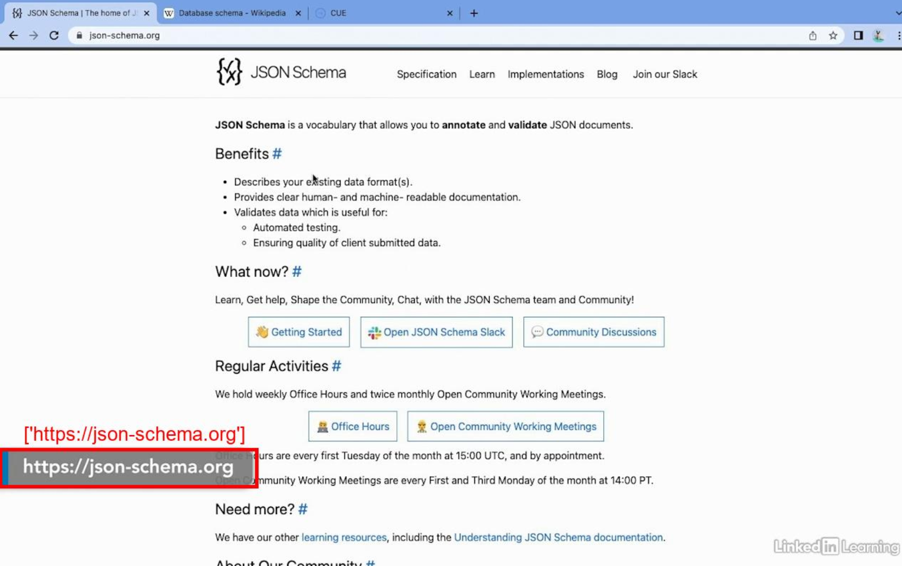

Project: Click Me
"Click Me" is a project made for a LinkedIn producer hackathon. Linkedin Learning courses have the issue that links will occasionally pop up to the side, but won't be actual clickable embeds. This tool utilizes machine learning to automatically scan the course video, identify when link pop-ups appear, and generate metadata (such as timestamp, screen position, url, etc.) that could be used to create clickable embeds.
Github Repo